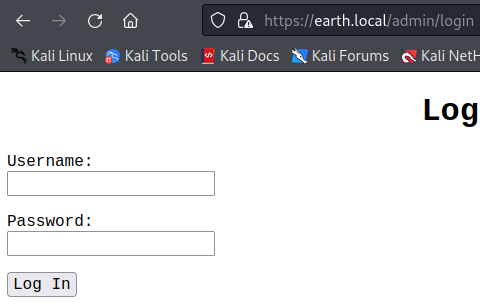
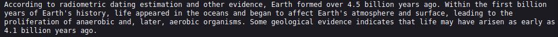

Home
VULNHUB - EARTH
Earth has an Authentication and Information disclosure vulerability in its web application which is leveraged to get a shell. A binary with the SUID bit set is then exploited to gain root access.
Scanning and Enumeration
Starting with an NMAP scan we have...$ nmap -p- -sC -sV --min-rate=1000 -T4 10.0.2.5
Starting Nmap 7.92 ( https://nmap.org ) at 2022-06-01 03:00 EDT
Nmap scan report for 10.0.2.5
Host is up (0.00052s latency).
Not shown: 65404 filtered tcp ports (no-response), 128 filtered tcp ports (host-unreach)
PORT STATE SERVICE VERSION
22/tcp open ssh OpenSSH 8.6 (protocol 2.0)
| ssh-hostkey:
| 256 5b:2c:3f:dc:8b:76:e9:21:7b:d0:56:24:df:be:e9:a8 (ECDSA)
|_ 256 b0:3c:72:3b:72:21:26:ce:3a:84:e8:41:ec:c8:f8:41 (ED25519)
80/tcp open http Apache httpd 2.4.51 ((Fedora) OpenSSL/1.1.1l mod_wsgi/4.7.1 Python/3.9)
|_http-title: Bad Request (400)
|_http-server-header: Apache/2.4.51 (Fedora) OpenSSL/1.1.1l mod_wsgi/4.7.1 Python/3.9
443/tcp open ssl/http Apache httpd 2.4.51 ((Fedora) OpenSSL/1.1.1l mod_wsgi/4.7.1 Python/3.9)
| http-methods:
|_ Potentially risky methods: TRACE
|_http-title: Test Page for the HTTP Server on Fedora
| ssl-cert: Subject: commonName=earth.local/stateOrProvinceName=Space
| Subject Alternative Name: DNS:earth.local, DNS:terratest.earth.local
| Not valid before: 2021-10-12T23:26:31
|_Not valid after: 2031-10-10T23:26:31
|_http-server-header: Apache/2.4.51 (Fedora) OpenSSL/1.1.1l mod_wsgi/4.7.1 Python/3.9
|_ssl-date: TLS randomness does not represent time
| tls-alpn:
|_ http/1.1
Service detection performed. Please report any incorrect results at https://nmap.org/submit/ .
Nmap done: 1 IP address (1 host up) scanned in 150.55 secondsWeb Server - TCP 80 | TCP 443 (SSL)
Both web servers respond with a400 (Bad Request) status code to every request. No directories or subdomain found either.
However in our nmap scan, under the web server that uses https, we have found a domain earth.local, and a sub-domain terratest.earth.local.
Both return the home page below...
The home page has a functionality that allows both the domain (https://earth.local) and the sub-domain (https://terratest.earth.local) to communicate with eachother
by sending a message encrypted with a key as shown below...
After performing directory enumeration, on https://earth.local we have...
This gives us an admin login page...

In the robots.txt file of https://terratest.earth.local we have...
In testingnotes.txt we have the following information...
 From the data, we have the following information:
From the data, we have the following information:
- The encryption used is
XOR. testdata.txtcontains the message key used for the encrypted messages on the home page.terrais the admin username.
testdata.txt include...

Let's use it to decrypt the encrypted messages found on the home page.
Let's use the python XOR decryptor on https://gist.github.com/sigilioso/6b113695571f4c9f520c64b4de6e5a99.
If you look through the options, you need to convert the message key to hexadecimal first. You can use a Text to Hex converter for that.
Decrypting the last message (0) we have...
We have earthclimatechangebad4humans which is the password for admin user terra. After logging in we have a cli interface...
Let's exploit it to get a reverse shell. Using the netcast, python or bash commands we get no reverse connection. But if we use base64 encoding we get a connection.
First encode the reverse shell command using base64:
echo '<command>' | base64
Then take the encoded output and run the following command in the cli:
echo <encoded_output> | base64 -d | bash
This takes our encoded ouput, decodes it using base64 binary and runs the output using bash. On our listener we get a connection and can view the user flag.

Privilege Escalation
Checking for executables that have the SUID bit set, we get...
We have a binary called reset_root. Executing it, we have...
As we can see it apparently performs some action, but checks that certain triggers (prerequisites) are met before the action can be performed.
If we look through the binary using strings; we find the following information...
This means that reset_root is used to change the root password to Earth if certain triggers (prerequisites) are met. So how do we check what
these triggers are. What we can do is to analyze the binary file upon execution. For that we can use the ltrace or strace commands.
ltrace is a library call tracer that helps to display all the functions that are being called at run time (from the library) and the arguments being passed to
that function. strace is similar to ltrace but instead of tracing library calls it traces system calls and signals. For example if you want to print
something to the screen, the ltrace would show the use of the printf or puts function from the standard library libc.
However, under the hood, ultimately, a system call named write is made to actually perform the print action; this is instead traced by strace.
Using ltrace we have...
Using strace we have...
This tells us that the triggers that is being checked for are certain files which do not exist. Let's create them; run the command below to create the necessary files...
$ touch /dev/shm/KHgTFI5G; touch /dev/shm/Zw7bV9U5; touch /tmp/KcM0Wewe
Executing reset_root again we have...
We have root access üòÅ.
$ touch /dev/shm/KHgTFI5G; touch /dev/shm/Zw7bV9U5; touch /tmp/KcM0WeweThank you for reading my writeup üòÄ | Home